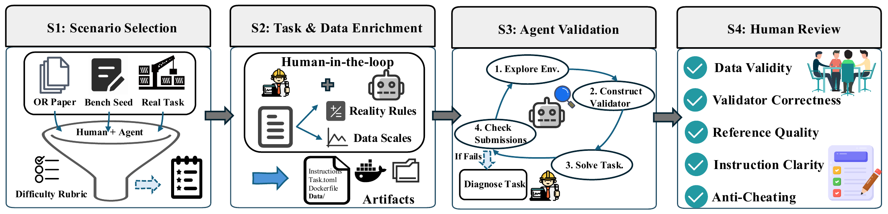

ORAgentBench: Can LLM Agents Solve Challenging Operations Research Tasks End to End?
ORAgentBench introduces an execution-grounded benchmark that evaluates whether LLM agents can complete end-to-end operations research workflows and deliver feasible, high-quality decisions.

Task construction and validation in ORAgentBench. Scenario selection, task and data enrichment, agent-assisted validation, and human review turn operational scenarios into executable, reproducible benchmark tasks.
01 / Research question
Practical operations research involves more than writing mathematical formulations. It requires interpreting operational requirements, reconciling data from multiple sources, selecting modeling and solving strategies, implementing executable methods, and validating the resulting decisions. Existing benchmarks typically evaluate either solvers on pre-formulated instances or language models on formulation generation, leaving the complete workflow insufficiently tested. ORAgentBench addresses this gap by investigating how to evaluate autonomous agents on realistic, executable optimization tasks with verifiable feasibility and objective-quality requirements.
02 / Approach
ORAgentBench constructs 107 executable optimization tasks from OR literature, existing benchmarks, and operational scenarios through scenario selection, data enrichment, agent-assisted validation, and human review. Each task provides a natural-language brief, multiple data and configuration files, and an isolated execution environment. Agents must interpret the materials, select modeling and solving strategies, implement and run solution code, and submit concrete decision artifacts. Hidden task-specific validators first check submission format and hard operational constraints, then assess objective quality using verified reference solutions and valid bounds where available. The benchmark reports feasibility, normalized quality, and pass rate. Difficulty profiles, execution trajectories, and skill-enhancement experiments further help diagnose where agents encounter modeling and solving bottlenecks.
03 / Research scope
The benchmark contains 107 tasks: 32 easy, 41 medium, and 34 hard, including eight staged dynamic-replanning tasks. It covers scheduling, routing, inventory, resource allocation, and related operational decisions. Experiments evaluate fourteen model-agent configurations in isolated environments without internet access, with a 45-minute agent interaction budget and a five-minute final solve limit per task. Further analyses examine runtime, failure modes, and OR-specific skills.
Experimental results
End-to-end task performance
| Method | All · Pass | Easy · Pass | Medium · Pass | Hard · Pass | Hard · Feasible |
|---|---|---|---|---|---|
| MiniMax-M2.7 · Claude Code | 14.02 | 40.62 | 2.44 | 2.94 | 6.00 |
| Kimi K2.6 · Claude Code | 27.10 | 31.25 | 36.59 | 11.76 | 26.00 |
| MiMo V2.5 Pro · Claude Code | 22.43 | 43.75 | 21.95 | 2.94 | 6.00 |
| Qwen3.5 Plus · Claude Code | 20.56 | 46.88 | 14.63 | 2.94 | 3.00 |
| Qwen3.6 Plus · Claude Code | 22.43 | 40.62 | 21.95 | 5.88 | 15.00 |
| DeepSeek V4 Flash · Claude Code | 26.17 | 46.88 | 26.83 | 5.88 | 15.00 |
| DeepSeek V4 Pro · Claude Code | 27.10 | 39.58 | 28.46 | 13.73 | 23.00 |
| GLM 5 · Claude Code | 22.43 | 37.50 | 24.39 | 5.88 | 12.00 |
| GLM 5.1 · Claude Code | 26.17 | 37.50 | 31.71 | 8.82 | 15.00 |
| Claude Sonnet 4.6 · Claude Code | 25.23 | 31.25 | 29.27 | 14.71 | 26.00 |
| Claude Opus 4.6 · Claude Code | 34.58 | 50.00 | 39.02 | 14.71 | 21.00 |
| GPT-5.3-Codex · Codex | 32.71 | 31.25 | 43.90 | 20.59 | 32.00 |
| GPT-5.4-mini · Codex | 26.17 | 43.75 | 29.27 | 5.88 | 21.00 |
| GPT-5.4 · Codex | 35.51 | 46.88 | 39.02 | 20.59 | 32.00 |
32 easy, 41 medium, and 34 hard tasks. Rows evaluate complete model-agent stacks with the four default OR base skills. DeepSeek V4 Pro averages three runs; other rows report one run. Feasibility is converted from the paper's 0–1 scale to percentages and retains its reported precision.
The gap between hard-task feasibility and pass rate makes solution improvement a distinct challenge after a valid decision has been found. Failure trajectories also point to earlier bottlenecks: missed operational rules and oversized or brittle formulations can prevent solver strength from helping at all. Reliable OR agents therefore need to connect model design, feasible-solution protection, and targeted quality improvement.
The effect of OR skills
| Method | Feasibility · Easy | Feasibility · Medium | Feasibility · Hard | Quality · Easy | Quality · Medium | Quality · Hard |
|---|---|---|---|---|---|---|
| Without skills | 0.81 | 0.66 | 0.24 | 0.61 | 0.35 | 0.20 |
| Base skills | 0.69 | 0.68 | 0.32 | 0.45 | 0.31 | 0.21 |
| Expert skills | 0.84 | 0.59 | 0.35 | 0.56 | 0.29 | 0.23 |
Each condition reports one complete run over the same 107 tasks. Base skills are the default skills used in the main comparison; expert skills are written by OR specialists.
Skills change where agents succeed rather than delivering a uniform gain. Expert guidance helps protect feasibility on hard tasks, yet its effects on easier tasks are mixed. The trajectory analysis suggests that useful skills must trigger diagnosis, method selection, and revision suited to the current task; procedural compliance alone does not ensure better decisions.
Citation
@misc{oragentbench2026,
title = {ORAgentBench: Can LLM Agents Solve Challenging Operations Research Tasks End to End?},
author = {Jiajun Li and Mingshu Cai and Yixuan Li and Yu Ding and Ran Hou and Guanyu Nie and Xiongwei Han and Wanyuan Wang},
year = {2026},
eprint = {2606.19787},
archivePrefix = {arXiv},
primaryClass = {cs.AI},
url = {https://arxiv.org/abs/2606.19787}
}